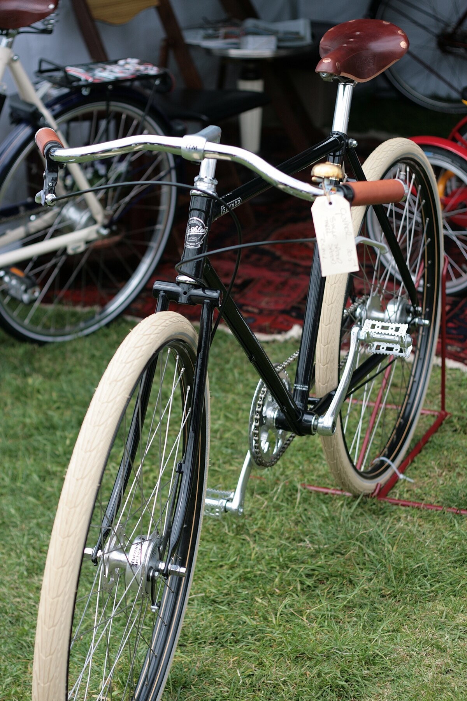

Established 1926 | Still Handbuilding Today

In the heart of Shakespeare's country, Pashley Cycles maintains Britain's longest continuous tradition of hand-built bicycles. While the world rushed to mass production, Pashley remained committed to the artisan approach that made British bicycles famous.
The Pashley Difference
What sets Pashley apart is their uncompromising commitment to traditional frame-building techniques combined with carefully selected modern components. Each frame spends over 30 hours in skilled hands before becoming a complete bicycle.
Founded by William 'Rath' Pashley in Birmingham as a manufacturer of industrial cycles. The original workshop produced rugged delivery bicycles built to withstand Britain's industrial heartland.

During WWII, Pashley produced military specification bicycles and special carrier cycles. The company's reputation for durability was cemented as their bicycles served in factories, postal services, and even with the Home Guard.
Introduction of the iconic Pashley Princess, which would become the definitive British ladies' bicycle. The 1960s also saw Pashley supplying bicycles to the Royal Mail and various police forces.
Relocation to Stratford-upon-Avon and the beginning of Pashley's renaissance as a premium heritage brand. The Roadster Sovereign was introduced, reviving classic roadster styling with modern reliability.
Still producing hand-built bicycles in Stratford-upon-Avon, Pashley now blends traditional craftsmanship with modern engineering. Recent innovations include discreet electric assist options while maintaining classic aesthetics.